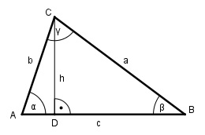

Aufgabe 140 Berechnen Sie die Fläche A eines Dreiecks, wenn a = 45 m, b = 296 m und c = 325 m.

Es liegt der Fall SSS (Seite a, Seite b, Seite c) vor. Der Fall hat dann eine eindeutige Lösung, wenn a + b > c, a + c > b und b + c > a ist. Cosinussatz: a2 = b2 + c2 - 2*b*c*cos α |+ 2*b*c*cos α a2 + 2 * b * c * cos α = b2 + c2 |-a2 2 * b * c * cos α = b2 + c2 - a2 |:2*b*c b2 + c2 - a2 cos α = -------------- = 2 * b * c 2962 m2 + 3252 m2 - 452m2 = -------------------------- = 0,9938 --> α = 6,4° 2 * 296 m * 325 m h sin α = --- |*b b h = sin α * b = 0,1115 * 296 m = 33 m c * h 325 m * 33 m A = -------- = --------------- = 5 362,5 m2 2 2